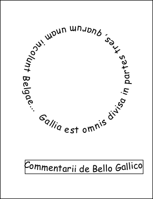

|
The example below shows how to add text on a curve and text flowing round a circle.
[C#]
string font = "Comic Sans MS";
string text = "Gallia est omnis divisa in partes tres, quarum unam incolunt Belgae...";
string theTitle = "Commentarii de Bello Gallico";
using var doc = new Doc();
doc.FontSize = 36;
doc.TextStyle.Kerning = XTextStyle.KerningType.None;
doc.Font = doc.EmbedFont(font, LanguageType.Latin, false, true, false);
// add some radial text in the top middle of the page
double cx = doc.MediaBox.Width * 0.5;
double cy = doc.MediaBox.Height * 0.6;
double r = doc.MediaBox.Width * 0.3;
CurvedText.AddRadial(doc, text, cx, cy, r, 225, true, false);
// add some curved text to a rectangle
double width = doc.MeasureText(theTitle);
doc.Rect.SetRect(100, 100, width, doc.FontSize * 1.5);
doc.FrameRect();
CurvedText2.AddCurved(doc, theTitle);
// save
doc.Save("ExampleCurvedText2.pdf");
[C#]
class CurvedText2 {
public static void AddCurved(Doc doc, string text) {
double halfWidth = doc.Rect.Width / 2;
double height = doc.Rect.Height - doc.TextStyle.Size;
double radius = ((halfWidth * halfWidth) + (height * height)) / (2 * height);
double centerX = doc.Rect.Left + halfWidth;
double centerY = doc.Rect.Bottom + radius + doc.TextStyle.Size;
double alpha = Math.Asin(halfWidth / radius) - Math.PI;
AddRadial(doc, text, centerX, centerY, radius, RadiansToDegrees(alpha), true, false);
}
public static void AddRadial(Doc doc, string text, double centerX, double centerY, double radius, double startAngleDegrees, bool inside, bool clockwise) {
var font = doc.ObjectSoup[doc.Font] as FontObject;
var widths = font.RuneWidths;
int n = text.Length;
double a = DegreesToRadians(startAngleDegrees);
double fontWidthToRadians = doc.TextStyle.Size / (radius * 1000);
doc.Rect.String = doc.MediaBox.String;
for (int i = 0; i < n; i++) {
// work out position
double x = centerX + (Math.Sin(a) * radius);
double y = centerY + (Math.Cos(a) * radius);
// add a character
doc.Pos.X = x;
doc.Pos.Y = y;
doc.Transform.Reset();
double charRotation = inside ? RadiansToDegrees(-a) + 180 : RadiansToDegrees(-a);
doc.Transform.Rotate(charRotation, x, y);
doc.AddText(text[i].ToString());
// increment angle
var rune = new XRune(text[i]);
double da = (double)widths[rune] * fontWidthToRadians;
a += clockwise ? da : -da;
}
doc.Transform.Reset();
}
private static double DegreesToRadians(double degrees) {
return degrees * Math.PI / 180;
}
private static double RadiansToDegrees(double radians) {
return radians * 180 / Math.PI;
}
}

ExampleCurvedText2.pdf
|
|
|